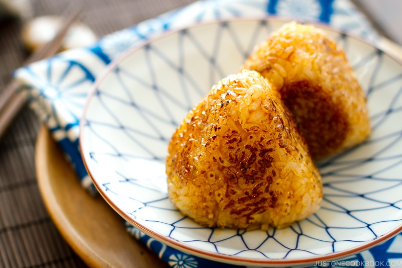

Yaki Onigiri

Onigiri is japanese for riceball, Yaki is japanese for grilled. Yaki Onigiri is grilled japanese riceball(s)
This recipe is very simple and dosen't have many steps.
Ingredients
- 2 rice cooker cup of rice
- water
- salt to taste
- soy sauce
- oil
Steps
- Cook the rice in the rice cooker.
- Wet your hands with water, then salt your hands, scoop about half a cup of rice into your palm, then shape into a triangle shape.
- Oil your pan, heat on medium, grill your onigiri until one side forms a crust, flip and repeat until all side have a crust.
- Turn heat to medium-low, brush all sides with soysauce, and keep grilling until crispy.
Back to recipes